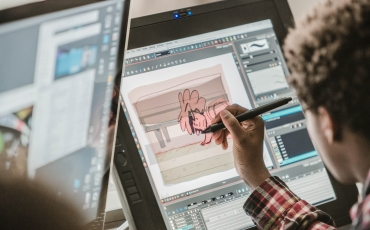
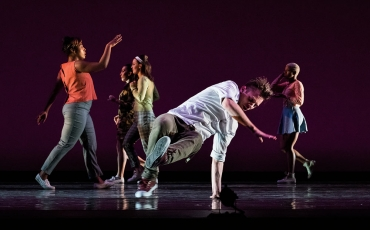

ACADEMICS
GRINDELWALD UNIVERSITY is committed to the academic progression of our students, which we must pursue while protecting the health and safety of our community.
School of Arts are founded on the principles of hands-on learning through an innovative curriculum. We use project-based education to plant the seeds for intellectual development where students can grow in their talents, passions, and academic achievements. Certified and welcoming teachers work individually with students to support their unique educational needs.
More than 20 minors are open to all students, so animators can study guitar, dancers can minor in photography, creative writers can take classes in illustration.
Working in a collaborative environment with professors, professionals and peers, you’ll learn how to bring your story and characters to life. From hands-on instruction to screenings and critiques, you’ll graduate with the skills to launch your career in animation.
You'll have the opportunity to study with some of the finest professional teaching artists in the world, and extend your dancing into our city and beyond into some of the most important dance and cultural centers in the world.
The Film & Animation program allows students to explore the possibilities of both film and animation. Students will learn film and animation techniques, explore various genres and styles, and create a capstone project of your choosing that combines film and animation in innovative ways.
GRINDELWALD UNIVERSITY is committed to the academic progression of our students, which we must pursue while protecting the health and safety of our community.
The University’s Centers and Institutes provide programs and targeted study and immersion in a variety of areas and initiatives. There are also a host of programs associated with individual schools and colleges.
We use the competitive spirit and sportsmanship we develop as teammates to do our best to become the very best. Our goal is to win and to excel at the highest level while acting and competing in a way that reflects our core values. We are all students and our department thrives as a learning environment. We are committed to the education of the mind, body, and spirit and view these pursuits as inseparable. We believe in the integrity of each individual.